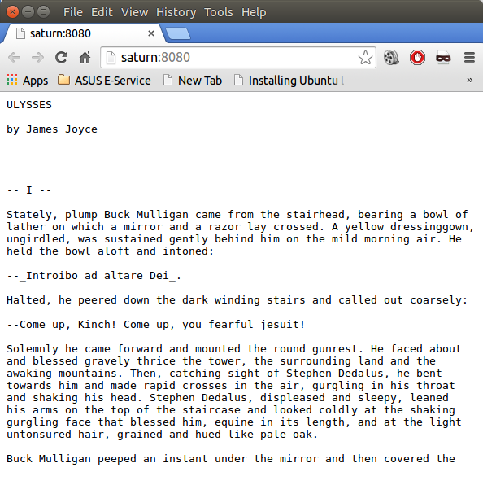

Creating dynamic websites with Python and WSGI
Introduction
Please notice:Work on this topic is under process. (August 2014)
WSGI is the Web Server Gateway Interface. It is a specification that describes how web servers communicate with web applications. It is a framework for the Python. It was originally specified in 2003. WSGI has become a standard for Python web application development. WSGI has been specified in PEP 3333. The abstract says "This document specifies a proposed standard interface between web servers and Python web applications or frameworks, to promote web application portability across a variety of web servers."
Simple Example with WSGI
We demonstrate the way of working with a simple example, actually as simple as simple can be. All it does will be to greet a visitor of the website with "Hello my friend!", we just had enough of "Hello World".
from wsgiref.simple_server import make_server
def application(environ, start_response):
start_response("200 OK", [("Content-type", "text/plain")])
return ["Hello my friend!".encode("utf-8")]
server = make_server('localhost', 8080, application)
server.serve_forever()
You can save this program wherever you want on your computer. If you start it with "python3 greeting.py",
you can visit the URL "localhost:8080" with a browser of your choice. You should see now: "Hello my friend!"
This text will appear within your browser. On the terminal, you will the an output,
which looks similar to this:
$ python3 hello_wsgi.py 127.0.0.1 - - [19/Aug/2014 10:31:39] "GET / HTTP/1.1" 200 16You may have noticed that we used Python 3 to start the server. The program runs with Python 2 as well. There are lots of similar examples out there on the web which don't work for Python 3. The reason is in many cases, that they don't return a bytes string, but a "simple" str class instance. So, if you drop the method call '.encode("utf-8")', the program will only run with Pyhton2 but not with Python3 anymore.
We used the simple reference implementation wsgiref of WSGI, which is included in Python's standard library. It's easier to for testing purposes. The make_server method takes five parameters:
- host: the host name can be 'localhost' or any other host name, like your server name "server = make_server('saturn', 8080, application)" or a domain or IP address, e.g. server = make_server('192.168.170.128', 8080, application), which makes it possible to access this web server from another computer in the network.
- port: We use 8080 as the port number
- app: This has to be a reference to a function, which is returning a list with the results. Every element of this list has to be a bytes string.
- We will not discuss the optional keyword parameters
"server_class=
, handler_class"
- environ
- start_response: start_response has to be a callable with three parameters:
status, response_headers, exc_info=None
status contains the numeric HTTP status code of the response, e.g. "200 OK", "404 NOT FOUND", or "500 SERVER ERROR". response_headers contains the HTTP message for the status code used. exc_info used for traceback information is optional.
Another example
The following program nothing new. It's just the previous example, which has to be extended so that the function application returns the first 30 lines of text from the novel Ulysses by James Joyce:
from wsgiref.simple_server import make_server
def application(environ, start_response):
start_response("200 OK", [("Content-type", "text/plain")])
fh = open("ulysses.txt")
lines = [fh.readline().encode("utf-8") for i in range(30)]
return lines
server = make_server('saturn', 8080, application)
server.serve_forever()
The browser output looks like this:
